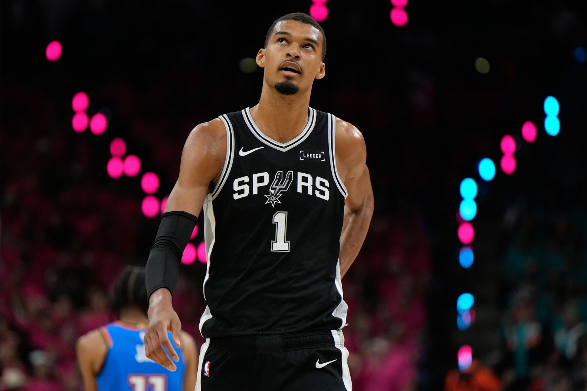

Welcome
Welcome to the Viktor Wembanyama Fan Website. This website has been created to provide fans with detailed information about one of the most exciting basketball players in the world. Viktor Wembanyama has quickly become one of the NBA's biggest stars due to his incredible combination of height, skill, athleticism and basketball intelligence.
The purpose of this website is to celebrate his achievements, provide information about his career, showcase his statistics and allow visitors to stay informed about his latest performances and accomplishments.
About Viktor Wembanyama
Born in France, Viktor Wembanyama gained international attention at a young age due to his unique playing style and physical attributes. Standing over 7 feet tall while possessing guard-like ball handling and shooting ability, he is considered one of the most talented young players in basketball history.
Since entering the NBA, he has continued to impress fans, coaches and analysts with his performances on both ends of the court. His ability to score, rebound, pass and defend makes him one of the most complete players in the game today.
Key Achievements
- NBA Rookie of the Year
- NBA Defensive Player of the Year
- NBA All-Star Selection
- Western Conference Champion
- One of the league leaders in blocks and rebounds
- Recognised as one of the most promising young players in basketball
Explore The Website
Use the navigation menu above to learn more about Viktor Wembanyama's life and career.
- Biography – Learn about Viktor's background and basketball journey.
- Statistics – View detailed performance statistics and analysis.
- Achievements – Discover awards, honours and career milestones.
- Highlights – Read about recent performances and watch highlights.
- Contact – Send feedback and comments through the contact form.
Latest Update
Viktor continues to establish himself as one of the NBA's elite players. His recent performances have demonstrated why many experts believe he has the potential to become one of the greatest basketball players of his generation.
As his career progresses, fans around the world continue to follow his journey and look forward to seeing what he can achieve in the future.
Meet The Team
Jake Price
Role: Website Designer and Developer
Responsible for planning, designing, developing and testing the Viktor Wembanyama Fan Website. This website was created as part of Unit 15 Website Development and demonstrates the use of HTML, CSS and JavaScript to produce a responsive and engaging website.